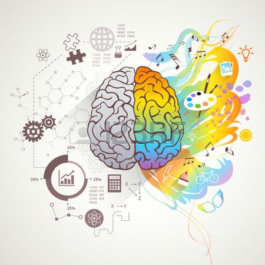

Öncelikle görev değiştirmenin çok zor olduğunu anlamalısınız. Çok fazla motivasyon gerektirir. Eve varır varmaz kanepeye çöküp televizyonu açarsanız, o akşamı çoktan kaybetmişsiniz demektir. Bunun nedeni, görev değiştirmek ve yemek yemek ya da uyumak gibi evrim tarafından yönlendirilmeyen bir şeyi yapmak için gereken motivasyon miktarının Herkül'ün zor bir görevi olmasıdır.

Bu nedenle kapıdan girdiğiniz ve yeni bir ortama geçiş yaptığınız an çok önemlidir. Şu anda kendinize yalnızca 20 dakikalık kodlama pratiği yapacağınızı söylerseniz, büyük olasılıkla başarılı olursunuz ve ataletinizi bir saat veya daha uzun süre öğrenmeye devam etmek için kullanırsınız. Hiçbir beyin 20 dakikalık bir görevi çok fazla çaba olarak algılamaz ve siz de akşamınızın tadını çıkarmak için beyninizi kandırırsınız.